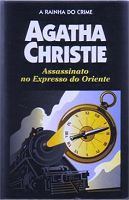

Assassinato no Expresso do Oriente
Murder on the Orient Express
A ação de Assassinato no Expresso do Oriente, um dos romances mais famosos de Agatha Christie, transcorre, integralmente, no mais famoso dos trens, e serviu de argumento para um célebre filme, no qual todos os numerosos personagens da narração — quase não há personagens secundários — foram interpretados, algo muito pouco freqüente no cinema, por figuras de primeira. Ao se passar num trem, a sua apaixonante intriga é ao mesmo tempo concentrada e dinâmica porque se desenvolve sempre num mesmo lugar, que tem a particularidade de ser um lugar em movimento. Através desta longa viagem, o inefável e sedentário detetive belga Hercule Poirot goza da oportunidade de resolver um dos seus casos mais misteriosos, tendo ao seu alcance, sem necessidade de deslocar-se, tanto a vítima como todos os possíveis assassinos.
Rafael Rocha: Sem dúvida um dos melhores (senão o melhor) livro de Agatha Christie. Tudo começa com um misterioso assassinato num trem. Poirot é o encarregado pela investigação, e a maneira como ele a conduz faz a leitura fascinante. Imperdível, e com um desfecho inesperado.